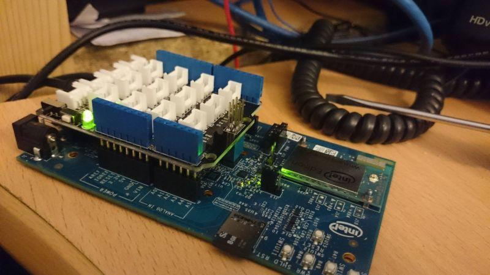

Welcome to enter the world of Grove! Grove is a collection of various modular sensors and actuators that help you dive into and enjoy the electronic world without jitter. Before we discuss those Grove modules one by one, you need to seat yourself and finish some preparations.
1. What’s Arduino?
Arduino is a flexible and easy-to-learn open source development platform that enjoys great fame among makers, geeks and interactive artists. It ignited the prosperity of the ongoing maker movement. Tons of creative projects are brought to life surrounding Arduino and its collaborative community, including our Grove system. To get started with Arduino, you need to own one first. Arduino and its clones are available over countless websites and even retail stores. One Google search is enough to get you one.
2. Arduino IDE Installation
Arduino is also the name of a programming IDE based on C/C++. After you get your Arduino, you should install the IDE. Depending on OS version, the specific installation varies. Thankfully Arduino team provides us a detailed installation guide for most OS systems:
http://arduino.cc/en/Guide/HomePage
3. Language Reference
But what if you have bare idea what the programming language is about? Arduino team also provides a good and comprehensive website for you to learn:
http://arduino.cc/en/Reference/HomePage
Now you have got yourself ready for the Grove exploration.
The Grove base shield plugs into an Arduino and is the foundation of the Grove system. All I/O ports of the Arduino are exposed and adapted into 22 Grove connectors which include digital I/O, analog I/O, and specialized ports (I2C, SPI, UART).
In the center, surrounded by the yellow lines, are 13 digital I/O ports. These can be used to read and control digital Grove modules, such as the light sensor and LEDs. Some of the digital I/O ports can also be used as PWM (pulse width modulation) outputs. By generating PWM waves, the Arduino can control the movement of a stepper motor or fade an LED. Within the green lines, on the left-hand side, are 5 analog input ports. Analog inputs are typically used to read analog sensors, like a potentiometer or a temperature sensor but these ports can also be used as digital I/O ports. Lastly, the specialized ports are outlined in red: two I2C ports, one SPI port, and one UART port. You’ll use these special ports with more sophisticated Grove modules, like the 3-axis accelerometer and the serial Bluetooth module.
The Grove compatible sensors contained in this pack will use one of the following ports: a digital port, an analog port, or an I2C port. Refer to the wiring instructions and sample code below for each Grove sensor. Ten Grove cables are included in this pack. Simply plug the Grove cables into the sensors and base shield. This enables plug and play operations with no soldering.
Description
Serving as a ubiquitous button, this one is a basic part for lazy hands. Just plug it onto the base shield. Then here you have a wire-free neat button.
Example
This example shows you how to turn on or off an LED via this button.
int button = 3; //attach a button to digital pin 3
int LED = 7; //attach an LED to digital pin 7
void setup()
{
pinMode(button, INPUT); //define button an INPUT device
pinMode(LED, OUTPUT); //define LED an OUTPUT device
}
void loop()
{
int buttonState = digitalRead(button); //read the status of the button
if(buttonState == 1)
digitalWrite(LED,1);
else
digitalWrite(LED,0);
}
Tips
This is a momentary button. That means it only outputs HIGH when pressed on. And once released, it no longer outputs HIGH but LOW. This is a favorite feature for projects like Moss coders, but if you like a stable push button, move on to the Grove – Switch(P) below.

Description
This switch is a mini SPDT slide. You can switch the signal to LOW or HIGH through it. Different from the Grove – Button(P) above, this one outputs steady states.
Example
You can totally replace Grove – Button(P) with this switch without tweaking a line in its example. Tips “P” stands for “panel mount”. For Grove modules included a “P” in its name, the design goal is neat and wire-free HID.

Description
This touch sensor is another substitute for a common button. When you touch the circular area on this pad, it will output HIGH. Better than the button, touch sensor has no wear-out problem.
Example

You can totally replace Grove – Button(P) with this switch without tweaking a line in its example.
Tips
This touch sensor measures the capacitance change on its sensitive area to determine its output. So whether you touch the pad on the front of it or backward, the result remains the same. If you need a “P” version, just flip over it and that’s it!
Description
The Grove magnetic switch detects the presence of a magnet. It uses a CT10, a single-pole, single throw switch. Magnetic switches (also known as Reed switches) are used in door and window sensors for burglar alarm systems, modern laptops to detect when the lid is closed, and speed sensors on bicycle wheels. When the ambient magnetic field reaches its threshold, it will output HIGH on its signal pin.
Example
You can totally replace Grove – Button(P) with this switch without tweaking a line in its example.
Tips
In some applications, magnetic switches have replaced traditional mechanical switches and have less wear and tear.

Description
LED is the most familiar parts for beginners, no “one of”. We use them to indicate, to create light effect and so on. This kit includes LEDs of 3 colors to meet your display and show basic need.
Example

We already used an LED as an indicator in examples above. And here let’s make some light effect beyond the plain on/off operation, to fade an LED.
/* This is an example code from Arduino, you can open it via this path in Arduino IDE: File --> Example --> 1.Basic --> Fade */
int brightness = 0; // how bright the LED is
int fadeAmount = 5; // how many points to fade the LED by
void setup()
{
// declare pin 9 to be an output:
pinMode(9, OUTPUT);
}
void loop()
{
// set the brightness of pin 9:
analogWrite(9, brightness);
// change the brightness for next time through the loop:
brightness = brightness + fadeAmount;
// reverse the direction of the fading at the ends of the fade:
if (brightness == 0 || brightness == 255)
{
fadeAmount = -fadeAmount ;
}
// wait for 30 milliseconds to see the dimming effect
delay(30);
}
Tips
This LED series has 6 colors to cater for different preference. They are all capable of “Panel Mount” and the other LEDs not included in this kit are:
1) Grove – Purple LED(3mm);
2) Grove – White LED(5mm);
3) Grove – Multi Color Flash LED(5mm).

Description
Buzzer, or Piezo speaker, is probably your first electronic component that utters. Besides being used as an alarm or indicator, button is totally capable of singing a song. Try and have fun with it!
Example
This is a brief example from Oomlout.com, playing you a household nursery rhyme – “Twinkle Twinkle Little Star”.
/* Melody
* (cleft) 2005 D. Cuartielles for K3
*
* This example uses a piezo speaker to play melodies. It sends
* a square wave of the appropriate frequency to the piezo, generating
* the corresponding tone.
*
* The calculation of the tones is made following the mathematical
* operation:
*
* timeHigh = period / 2 = 1 / (2 * toneFrequency)
*
* where the different tones are described as in the table:
*
* note frequency period timeHigh
* c 261 Hz 3830 1915
* d 294 Hz 3400 1700
* e 329 Hz 3038 1519
* f 349 Hz 2864 1432
* g 392 Hz 2550 1275
* a 440 Hz 2272 1136
* b 493 Hz 2028 1014
* C 523 Hz 1912 956
*
* http://www.arduino.cc/en/Tutorial/Melody
*/
int speakerPin = 9;
int length = 15; // the number of notes
char notes[] = "ccggaagffeeddc "; // a space represents a rest
int beats[] = { 1, 1, 1, 1, 1, 1, 2, 1, 1, 1, 1, 1, 1, 2, 4 };
int tempo = 300;
void playTone(int tone, int duration) {
for (long i = 0; i < duration * 1000L; i += tone * 2) {
digitalWrite(speakerPin, HIGH);
delayMicroseconds(tone);
digitalWrite(speakerPin, LOW);
delayMicroseconds(tone);
}
}
void playNote(char note, int duration) {
char names[] = { 'c', 'd', 'e', 'f', 'g', 'a', 'b', 'C' };
int tones[] = { 1915, 1700, 1519, 1432, 1275, 1136, 1014, 956 };
// play the tone corresponding to the note name
for (int i = 0; i < 8; i++) {
if (names[i] == note) {
playTone(tones[i], duration);
}
}
}
void setup()
{
pinMode(speakerPin, OUTPUT);
}
void loop() {
for (int i = 0; i < length; i++) {
if (notes[i] == ' ')
{
delay(beats[i] * tempo); // rest
}
else
{
playNote(notes[i], beats[i] * tempo);
}
// pause between notes
delay(tempo / 2);
}
}
Tips
How Piezo buzzer works? Usually there are two ceramic wafers in each Piezo buzzer. When voltages are given to them, they attract or reject each other. The air vibration caused by the shake of these wafers emits sound. When the shaking frequency changes the sound frequency will change alongside.

Description
This is a miniature vibration motor suitable for non-audible indicators. When setting High, this motor can create the vibration effect just like the vibration mode of your phone.
Example
You can totally use it as an LED, but also you can create some beats with it. Upload the buzzer’s example to this vibrator and check out the vibration version of “Twinkle Twinkle Little Star”.
Tips
The power of one unit is pretty limited. Want something bigger? Vibrator matrix is worthy of a try.
Description
This is a 10Kohm linear rotary potentiometer. It has 300 degrees active range. Also designed as a HID device, “panel mount” feature is added. But before becoming a lovely and friendly HID, DIY a rotary cap for it!
Example

This example shows you how to read the rotary angle sensor.
int potentiometer = 0;
void setup()
{
Serial.begin(9600); //set the serial communication frequency at 9600 bits per sec
pinMode(potentiometer, INPUT);
}
void loop()
{
int value = analogRead(potentiometer);
Serial.println(value); //print the value on the serial monitor screen
delay(1000); //wait 1000ms before printing next value
}
Tips
Rotary potentiometer looks quite similar to rotary encoder. But they are totally not the same in fact.
Functionally, rotary potentiometer is essentially a slide potentiometer, just in a circle shape. It reflects the position in analog way like a slide potentiometer does. But rotary encoder counts the angle it rotated by taking notes, say a click, and then outputs the data processed by the chip on the board in analog or digital way.
You can also tell the difference on their exteriors. Rotary potentiometer has a active range, say 300 degrees. But Rotary encoder can just go round and round in one direction.
Description
The Grove sound sensor is an electric microphone that enables your project to respond to environmental sounds. The board contains a potentiometer to control the sound input level.
Example

This example sets a threshold to a LED. When the intensity of ambient sound reaches the preset threshold, the LED turns on.
int ledPin = 9; //attach a LED to Digital 12
int thresholdValue = 0; // the threshold to turn on or off the LED
void setup()
{
pinMode(ledPin, OUTPUT); //set the LED on Digital 12 as an OUTPUT
}
void loop()
{
int sensorValue = analogRead(A0); //read the sensorValue on Analog 0
if(sensorValue>thresholdValue)
digitalWrite(ledPin,HIGH);
delay(200);
digitalWrite(ledPin,LOW);
}
Tips
The electric microphone collects sound intensity for all frequencies. And the potentiometer acts as the doorman. When you rotate it completely clockwise, it lets everything go through, and when you rotate it completely counterclockwise, none of it can go through.
Description
The light sensor, also known as the light dependent resistor (LDR), is a commonly used sensor in a wide variety of applications from DIY projects to industrial automation. Typically the resistance of the light sensor decreases when the ambient light intensity increases.
Example

This example will turn on an LED when the light intensity falls below the preset threshold. The light sensor is attached to the Arduino analog pin 0 (the bottom left analog Grove connector) and the LED is attached to Grove digital connector 12 on the base shield.
int ledPin=12; //attach a LED to Digital 12
int thresholdvalue=400; //the threshold to turn on or off the LED
void setup()
{
pinMode(ledPin,OUTPUT); //set the LED on Digital 12 as an OUTPUT
}
void loop()
{
int sensorValue = analogRead(0); //the light sensor is attached to analog 0
if(sensorValue<thresholdvalue)
{
digitalWrite(ledPin,HIGH);
}
else
{
digitalWrite(ledPin,LOW);
}
}
Tips
The output of the analog light sensor ranges from 0 to 1023, but the output is not linear with the ambient light intensity. Below is a table to help you understand what the output really means.
| Sensor Value | Illuminance (LUX) | Description (adapted from Wikipedia) |
|---|---|---|
| 100 | <1 | |
| 200 | ~1 | Full moon overhead at tropical latitudes |
| 300 | ~3 | Twilight in the city |
| 400 | ~6 | |
| 500 | ~10 | |
| 600 | ~15 | |
| 700 | ~35 | Family living room |
| 800 | ~80 | Office building light in hallway |
| 900 | >100 | Very dark, overcast day |

Description
The Grove temperature sensor uses a thermistor to determine the ambient temperature. The detection range of this sensor is between -40 to 125 degrees Celsius with an accuracy of ±1.5℃. However it doesn’t output the temperature value directly. To get the specific temperature value, we will use the formula in the code below.
Example

This example shows how to convert the raw output of the sensor into the specific temperature value. You can see the output data in Celsius in the serial monitor.
int a;
int del=1000; // duration between temperature readings
float temperature;
int B=3975; //B value of the thermistor
float resistance;
void setup()
{
Serial.begin(9600);
}
void loop()
{
a=analogRead(0);
resistance=(float)(1023-a)*10000/a;
temperature=1/(log(resistance/10000)/B+1/298.15)-273.15;
delay(del);
Serial.println(temperature);
}
Tips
Where does the intrinsic function to find the temperature come from? It’s a variation of the Steinhart-Hart equation, a widely used approximation that gives T (temperature) as a function of R (resistance of the thermistor). The original equation is:
All three parameters in the equation above can be described by one parameter: B. Within the industry people characterize thermistors by B value, as defined in our example. So the built-in function is actually a variation based on the B parameter equation.

Description
Relay is a useful tool to magnify your Arduino’s control ability! Feed the control signal through the Grove interface, and relay will control the open/close of the external circuit that connected to the screw terminals. The voltage of the external circuit can run up to 220V! So grab this relay and start some really tough projects!
Example
Following is an example of using a button to control the relay.
const int buttonPin = 3; // the button is attached to digital pin 3
const int relayPin = 9; // the relay is attached to digital pin 9
int buttonState = 0;
void setup()
{
pinMode(relayPin, OUTPUT);
pinMode(tiltPin, INPUT);
}
void loop()
{
// read the state of the button:
buttonState = digitalRead(buttonPin);
if (buttonState == 1) digitalWrite(relayPin, HIGH);
else digitalWrite(relayPin, LOW);
delay(10);
}
Tips
Relay is an electronically controlled mechanical switch. The size of one varies according to its capability of carrying current. The bigger a relay (essentially just the plastic box part) is, the larger the current it can carry.

Description
This is a little tool in case you need to merge the quick prototyping Grove system with other prototyping circuits. Tighten up the signal wires you need to the screw terminals. Then you can use the external circuit as a common Grove module.
Description
Servo is absolutely a fun motion control device to play! Via a servo library built in Arduino IDE, you can locate it at any position between 0 to 180 degrees. With 4 shafts in different shapes coming, this servo is ready to drive a little fan, lift an object, or mimic a clock hand.
Example

Servo is a kind of analog actuators. However Arduino can’t output analog signal. To approximate the analog signal required by analog actuator, Arduino adopts PWM (Pulse Width Modulization) to cope with this. Not all Grove ports can be used as analog outputs. The available ports are D3, D5, D6, D9, D10 and D11. Here is an example how we use a potentiometer to control the position of the servo.
#include <Servo.h>
Servo groveServo; //create a object
int potentiometer = 0;
int shaft;
void setup()
{
groveServo.attach(3); //the servo is attached to D3
pinMode(potentiometer, INPUT);
}
void loop()
{
shaft = analogRead(potentiometer);
shaft = map(shaft, 0, 1023, 0, 179);
//analog input data range from 1~1023, but servo
groveServo.write(shaft); //only reflects to data ranging from 1~179.
delay(15);
}
Tips
Inside the gearbox are a set of gears. When the servo is working, don’t rudely try to reverse its direction by your hand, because this could cause permanent damage to the gears.

Description
Would you like a cup of flowers to ease your exhausted heart? This project is made up of Grove – LED and one Grove – Touch Sensor. With the sensor being touched, those lovely LEDs will shine you a warm and comfortable light effect.
Materials List
Note: The number of LEDs is arbitrary. There are three of them contained in the basic kit. But you can increase or decrease it depending on the volume of your cup. I have a big cup here, so I added three more from our website.
Steps
1. Fold The Buds

Choose one flower pattern you like and follow its steps to create some of them. One Google search may help a lot in finding one. There are so many origami hobbyists and artists over the Internet who’d like to share their handcrafts.
I chose tulip here, but sunflower, rose and lily also sound great!
When folding the bud, you need to leave a small hole on its button for the Grove cable to go through.
2. Set Up

Connect the buds and the touch sensor onto the Grove – Base Shield with the 10cm Grove cable. And then upload the code to your controller.
void setup()
{
pinMode(2, OUTPUT);
pinMode(4, OUTPUT);
pinMode(6, OUTPUT);
pinMode(7, OUTPUT);
pinMode(11, OUTPUT);
pinMode(13, OUTPUT);
pinMode(9, INPUT); //pin of touch sensor
}
void loop()
{
int switchState = digitalRead(9);
if(switchState == HIGH)
{
digitalWrite(2, HIGH);
digitalWrite(4, HIGH);
digitalWrite(6, HIGH);
digitalWrite(7, HIGH);
digitalWrite(11, HIGH);
digitalWrite(13, HIGH);
}
else
{
digitalWrite(2, LOW);
digitalWrite(4, LOW);
digitalWrite(6, LOW);
digitalWrite(7, LOW);
digitalWrite(11, LOW);
digitalWrite(13, LOW);
}
delay(100);
}
3. Power Up & Settle Down
Use a portable 9V battery to provide power to the flowers and settle it down in the cup. Finished! Enjoy your cup of flowers!
(downloaded form think.bigchief.it)
Description
How do you say hello to a friend? Big Chief would say “what’s better than a shake?” When one of these Big Chief paper toys lean his back against the others, they will shake to say hi!
Materials List
Note: The number of LEDs is arbitrary. There are three of them contained in the basic kit. But you can increase or decrease it depending on the volume of your cup. I have a big cup here, so I added three more from our website.
Steps
1. Print It Out!

Choose one pattern you like over the Internet. Make sure there is enough room for a magnet or a magnetic switch plus a vibrator. Same as the origami flower above, you can find tons of them on the Internet.
2. Fill The Organs In
Focus when cutting the paper toys. Only in that way you can get a neat one. After that, time to fill some organs to them.
I pasted a magnet on the back of Big Cihef A(let’s call it this name!). I stuck it there with double-sided adhesive tape.

And for Big Chief B, I pasted a magnetic switch on his back, the same position as A, and a vibrator on his foots.

3. Glue Them Up

Carefully follow the instruction on the printed sheet. Plug the Grove cables into two Grove Modules we used in Big Chief B. Then you will get two cute paper toys like above.
4. Upload Program

Upload the code below to your Arduino. By doing this, you bring life to them.
void setup()
{
pinMode(11, INPUT);
pinMode(9, OUTPUT);
}
void loop()
{
int sensorState = digitalRead(11);
if (sensorState == 1) digitalWrite(9, HIGH);
else digitalWrite(9, LOW);
delay(100);
}
If you want to make some awesome projects by Grove - Starter Kit Plus, here's some projects for reference.

This is an IoT demo make by Intel Edison and Grove - Starter Kit Plus. Intel have released an Intel IoT Developer kit that you can get to help developers and techies to get their hands on a simple piece of kit and start developing applications for use in the everyday world.
Born with the spirit of making and sharing, that is what we believe makes a maker.
And only because of this , the open source community can be as prosperous as it is today.
It does not matter what you are and what you have made, hacker, maker, artist and engineers,
as long as you start sharing your works with others,
you are being part of the open source community and you are making your contributions .
Now share you awesome projects on with us on Recipe, and win a chance to become the Core User of Seeed.
Get more information about Core User please email to: recipe@seeed.cc